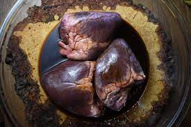

Grilled Venison Hearts

The heart of venison is one of the best cuts on the animal. It takes to the open flame of the grill nicely, bringing out the earthy sweetness
The preparation is simple and quick, like most good cuts of meat it really only needs salt, pepper and heat.
The heart of the whitetail is not huge so saving up several makes for a soild meal.
Ingredients
- 1-4 venison hearts cleaned and split open
- Salt and pepper
- High quality olive oil
- Prepare hearts by removing any excess fat and then split them open, trim out the valves and connective tissue and cut into strips or pieces as you deem fit.
- Apply olive oil and salt and pepper to taste
- Light grill preferable using hardwood as fuel or hardwood lump charcoal.
- Grill until warm 5-7 minutes. Again you are looking for rare to medium rare.